Geospatial data models
Helena Mitasova
GIS/MEA582 Geospatial Modeling and Analysis NCSU
Learning objectives
- Define raster and vector data models
- Understand and use data models transformations
- Recognize geospatial data formats
- Identify and use on-line geospatial data repositories and services
- Explain principles of open science:
open data, open source software, open access
Geospatial data models
Mapped data, modeling or analysis results are represented using
- raster (regular grid) data model
- vector (feature) data model
- specialized representations: meshes
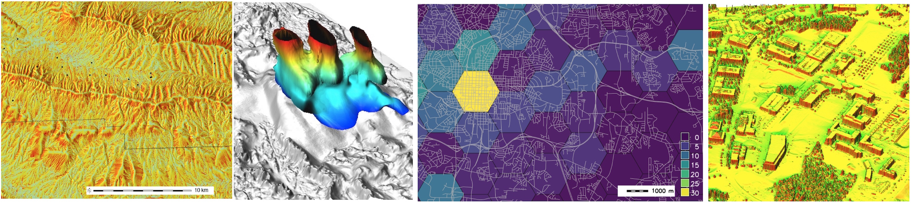
Geospatial objects and phenomena
- Continuous fields
- elevation surfaces
- temperature, precipitation
- concentration of chemicals in soil or water bodies
- Discrete features: lines, points or areas with attributes
- roads, buildings, cell towers
- land use types, administrative units
- Some phenomena can be treated as both types
- agricultural fields, soil properties
- population densities
Continuous fields
- each point in space is assigned a distinct value and change in values between two neighboring points is relatively small
- mathematical representation as bi-variate or multi-variate function w=f(x,y), w=f(x,y,z)
- often represented by raster data model,
- vector model is also used: isolines, meshes, or points.
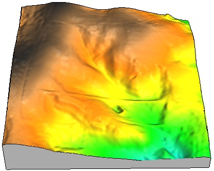
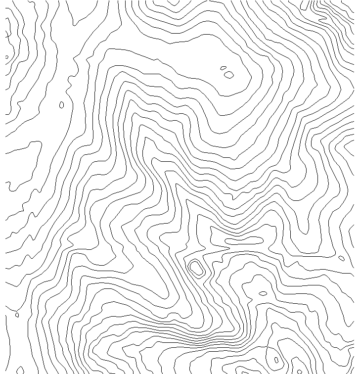
 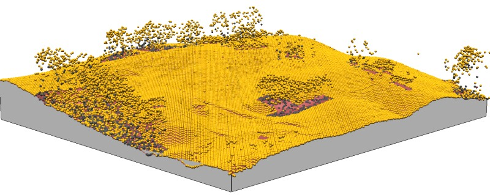
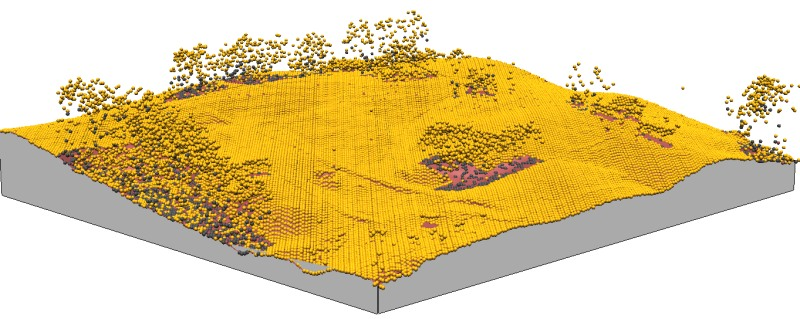
Discrete objects / features
- lines, points, areas, or volumes with attributes
- represented by vector data model as geometry(shape) with attribute database;
- raster representation is also used
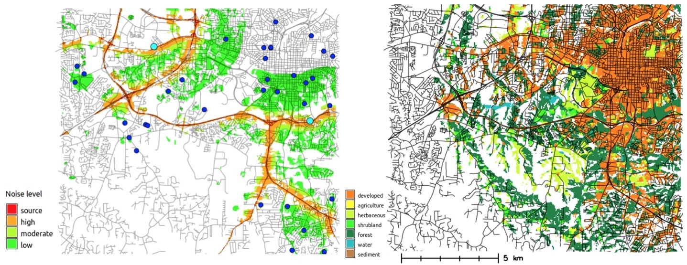 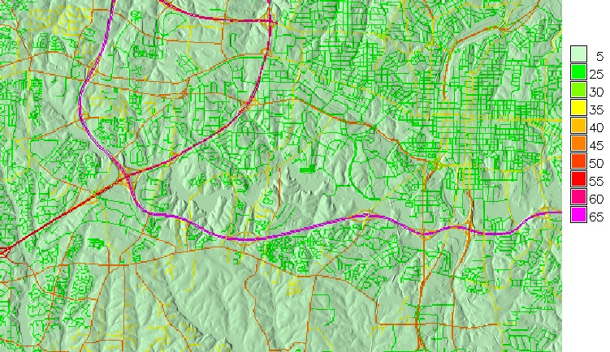
Raster data model 2D
- header: spatial extent and resolution, followed by matrix of values (INT, FP, DP),
- continuous field : value assigned to a grid point
- discrete object : category value assigned to pixel (area)
Raster data model: continuous fields
elevation, precipitation
 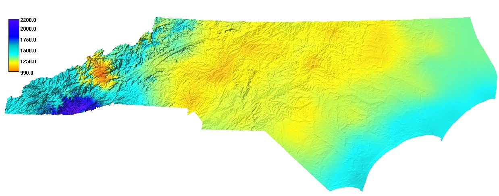
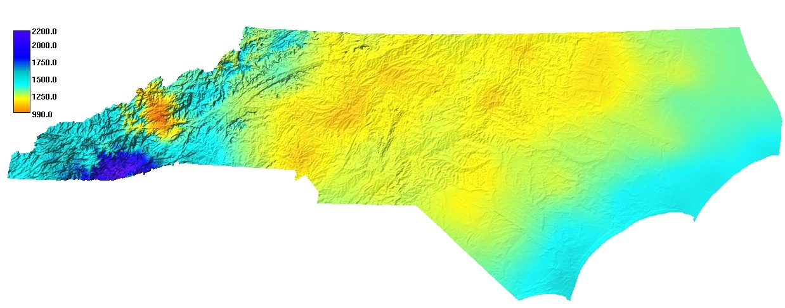
Raster data model: discrete features
Discrete: land use, roads
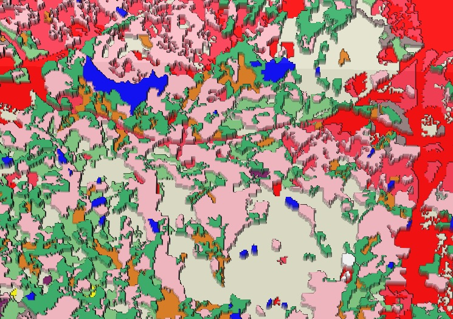
Raster data model for volumes I
- set of 2D raster layers can be used to represent soil horizons or geological layers
- combined representation:
- continuous (horizontally) and discrete (vertically)
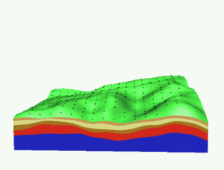
Cross-sections through 3D model of soil horizons
Raster data model for volumes II
3D raster - voxel model
- header + 3D matrix of values
- vertical resolution is usually much finer than horizontal
- mostly used for 3D continuous representation w=f(x,y,z)
Vector data model: geometry and attributes
- geometry:
- [x,y,(z)] points representing points, lines, areas
- topology: nodes, vertices, centroids, line, polyline, boundary, polygon
- attributes:
- points, lines and areas are abstract representations of complex features (firestation – point, road – centerline, ...)
- attributes of these features are stored in data management systems
Vector data: 3D models
Oblique photogrammetry, lidar - 3D models of cities now common
3D vector data geometry: face, kernel volume
3D cities, building interior,
Image Image
Vector data model
Discrete: streets, streams, geodetic points, census blocks Continuous: elevation contours (isolines), precipitation (points)
Image Image
Data model modifications
- Changing raster resolution
- Changing vector geometry type
Raster data - changing resolution
Resolution: size of the grid cell (pixel) in map units (m)
- discrete: nearest neighbor resampling
- continuous: re-interpolation
Image composite: slide 31 with equations
Increasing resolution
Effect of resampling / reinterpolation on the resulting raster
Image composite: slide 30 also a note from 33
Decreasing resolution
- discrete: nearest neighbor resampling, mode (most common)
- continuous: re-interpolation, average, nearest neighbor
Image composite: slide 35
Changing vector geometry
- lines or areas to points
- points to lines
- generalization
Image composite: slide 35
Conversion between data models
- vector to raster
- continuous: spatial interpolation
- discrete: nearest neighbor
- raster to vector
- continuous: point sampling, isolines
- discrete: nearest neighbor, grid center or boundary
Image composite - professional mapping
Conversion between data models
Examples see slide 48,50
- vector to raster
- continuous: spatial interpolation
- discrete: nearest neighbor
- raster to vector
Image composite - professional mapping
Common geospatial data formats
specific implementation of data model,
open standard or proprietary
Raster
- GIS (ascii and binary): ArcGRID, GRASS, SURFER
- Imagery: MrSID, GeoTIFF, BIN, JPEG2000
- Graphics: GIF, JPG, PNG, Bitmap
- HDF, NetCDF
Vector
- KML, Shape, ArcSDE, GML, MapInfo, TIGER
- PostGIS, OracleSpatial
data repositories
Data repositories, WMS, WPS, WebGISopen science:
open data, open source software, open access
OSGeo, geo4all
Open source geospatial resources
OSGeo: Web GIS(many), QGIS, GRASS GIS, libraries
R, pySAL
Summary
- raster and vector data models
- geospatial data formats
- data repositories, wms services, metadata
- open science: open data, open source software, open access